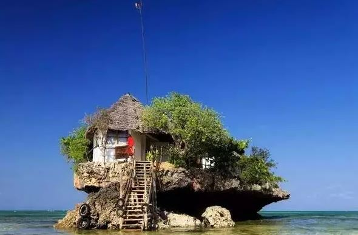
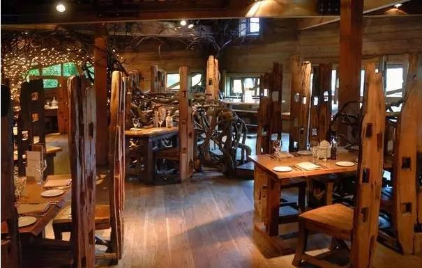
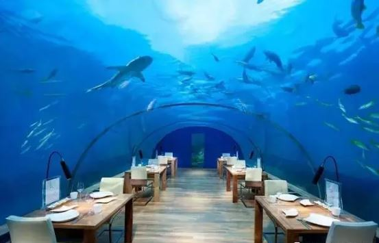
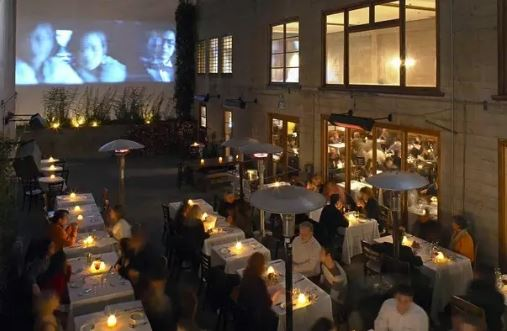
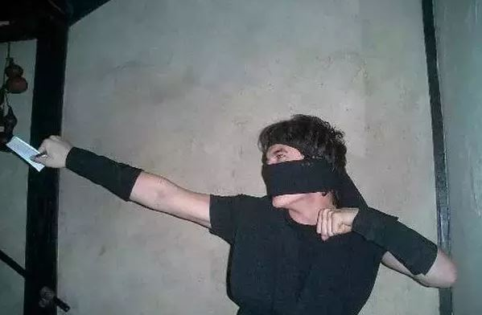
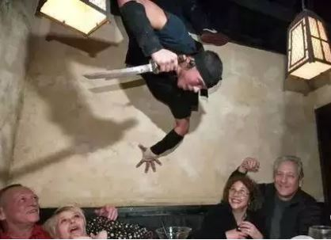
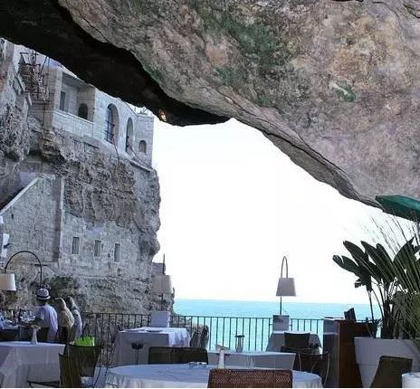
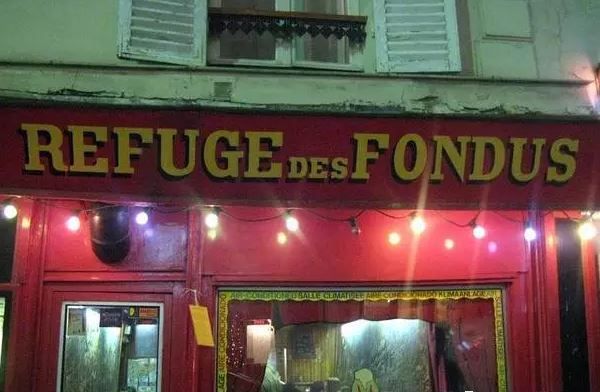
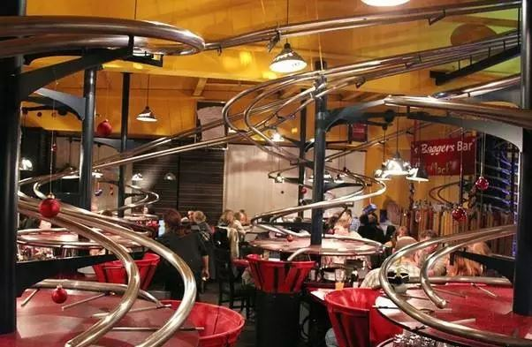
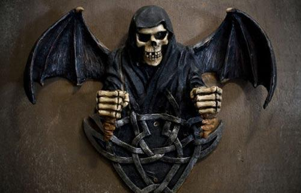

这些针对年轻顾客打造的餐厅，颠覆你对餐厅的概念
一家新的餐厅，最大的吸引力是饭菜的质量。但对于有些餐馆，有趣的体验不止在味蕾。下面我们为大家推荐了全球几大奇怪诡异的餐厅，它们将颠覆你对餐厅的概念。

岩石餐厅(坦桑尼亚 桑给巴尔)
岩石餐厅(The Rock)“名如其厅”，它坐落在桑给巴尔东南部Michanvi Ringwe海滩边的一块岩石上。小小的岩石餐厅只有12张餐桌。但是如果你运气好，订到一张桌子，你会看到终生难忘
的海景。该餐厅特色菜是海鲜。章鱼沙拉是很棒的开胃菜，之后会为你奉上“岩石特色”的龙虾、长臂虾、大虾、鱼片和烤鱿鱼。该餐厅在低潮时可步行到达，高潮时需要乘坐渡船。

树屋餐厅(英格兰 阿尼克)
这个高架餐厅里，树木从地板生长起来直冲云霄，手工纱窗也是由树枝制成。树屋餐厅(The Treehouse Restaurant)午餐时会开放，但是晚餐时的童话灯让这个地方更加梦幻。餐厅菜单上有
当地海鲜和来自附近农场的肉类。目前，烤猪肉里脊和烤水煮鲑鱼都是很火的食物。

珍珠海底餐厅(马尔代夫 伦格里岛)
坐落在康拉德马尔代夫伦格里岛度假胜地，珍珠餐厅(Ithaa)自称是全球首家全玻璃海底餐厅。它在水面下5米深的地方，为顾客提供了180度全方位的暗礁和海洋生物景观。你可以一边品味鱼
子酱和龙虾，一边欣赏鲨鱼和鳐。

外国影院(旧金山)
先不管名字，这家质朴餐厅中的电影包括《马耳他之鹰》、《钢铁巨人》和《小教父》等。电影投射在一个四合院内的刷白墙壁上，但是坐在室内篝火旁或者楼上夹层中也可以俯瞰到饭厅。
他们将这里的服务称为“典型的旧金山式用餐体验”，其每日更新的菜单里有各式各样的时令食材，另外还有一间牡蛎和贝类酒吧。
盖尔·皮里(Gayle Pirie)和约翰·克拉克(John Clark)是这里的主厨兼餐厅共同所有人，他们广游欧洲和亚洲，只为了寻找当地手工食材。外国影院(Foreign Cinema)的加州/地中海风格菜单证明他们的努力没有白费。
心脏病发烧烤(拉斯维加斯)
就像它的名字，心脏病发烧烤(Heart Attack Grill)是健康强迫症患者的噩梦。在这个拉斯维加斯餐厅，挂着听诊器的护士端着各式各样的汉堡包，从“单边搭桥”到“八边搭桥”，一应俱
全。四边搭桥汉堡包由四个半磅重的肉饼、8片起司和16片培根组成，每一片圆面包上都涂抹着猪油。如果汉堡包不合胃口，还有很多“粗线条”的油炸食品、油炸小女生奶昔和葡萄酒输液
袋。
心脏病发烧烤自豪地保持着最高卡路里含量汉堡包的吉尼斯世界纪录(四边搭桥汉堡含有9982卡路里热量)。

忍者纽约(纽约)
忍者纽约(Ninja New York)将诡异主题搞得十分认真，它的大门都十分隐秘。一旦你找到入口，踏进这个秘密餐厅就像回到了封建时期的日本。这个餐厅用铁棒和石墙打造出了日本山村的样
子，它将给人一种纯粹的忍者体验。
服务员着装像是诡秘的勇士，无论是从阴影跳出，还是彻夜不眠地耍着小把戏娱乐观众，他们绝对会让你流连忘返。甚至连食物都闪烁荧光。篝火羊排和龙卷这样的特色菜肴在刀锋捻转和空
手道斩波的表演中完成，味觉享受之前，还可感受到一场视觉盛宴。

洞穴餐厅(意大利 波利尼亚诺海滨)
洞穴餐厅(Ristorante Grotta Palazzese)将其餐桌置于悬崖边上，这样，顾客就可以俯瞰大海。不止这样，这个山洞是深深嵌入一块石灰岩悬崖内的用餐洞穴，在这里可以俯瞰亚得里亚海。
在水面上方74英尺(约22.5米)的地方，用餐者可以享受美味的贝类馄炖，还可以在习习海风中享受加入龙虾的意大利汤饭，身下海水拍岸的声音不绝于耳。从5月到10月，当洞穴灯光倒映在
水面，使得这里的夜景尤其惊艳迷人。

避难所火锅(巴黎)
从外面看起来，它可能有点像奢侈的嘉年华，但是它的菜单很简单。大部分火锅餐厅都一样，只有两种选择：红酒或白酒，起司或肉类。但是这个餐厅就有点古怪了。在巴黎，以酒杯盛装的
葡萄酒是要收税的。
为了绕开这一规定，避难所火锅(Le Refuge des Fondues)将红酒都用防溢婴儿奶瓶装。几个朋友一起吮吸塑料奶嘴的乐趣往往会加速红酒消费。如果酒后你想涂鸦一番，你的周围还有一大
面满是涂鸦的墙。
黑暗之中(巴黎)
讨厌茄子?你刚刚津津有味地吃掉那个就是茄子。在黑暗之中(Dans le noir)连锁餐厅，用餐者在完全黑暗的环境中吃着神秘的食物。餐厅的想法是，如果你不能看见食物，那它的味道会更加
强烈，因为视觉受阻，味觉就会更加突显。
当你无法“以貌取食物”时，你对食物的概念就会发生颠覆性改变。除了这种享受食物的酷炫方式，黑暗之中餐厅还雇佣了盲人和有视力障碍的服务员为你引导食用过程。

装袋人餐厅(德国 纽伦堡)
在装袋人餐厅(`s Baggers)，你要在桌面的触控屏上点餐，几分钟后，食物就会被放在遍布餐厅的过山车式网络轨道上送到桌上来。
人们很容易不停地点餐，因为他们想观看盘子在轨道上滑动旋转的样子。有些圈圈甚至可以让盘子翻转倒置。为了避免菜品到达餐桌时乱七八糟，订单的某些菜品会装在分离容器内送上来，
还有一些装调味品和汤的罐头。

比利时一家被废弃的餐厅，由“千魂屋”和一个神秘的酒吧组成，这是当地广为人知的“幽灵餐吧”。这家地狱餐厅，让人觉得在里面吃饭就像进了鬼屋吃饭一样